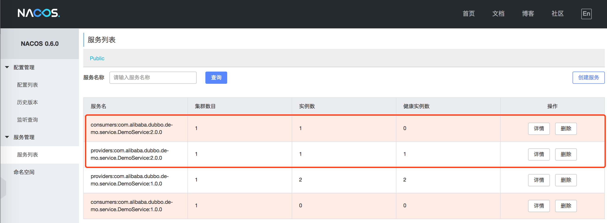

Dubbo 融合 Nacos 成为注册中心¶
Nacos 作为 Dubbo 生态系统中重要的注册中心实现，其中 dubbo-registry-nacos 则是 Dubbo 融合 Nacos 注册中心的实现。
预备工作¶
当您将 dubbo-registry-nacos 整合到您的 Dubbo 工程之前，请确保后台已经启动 Nacos 服务。如果您尚且不熟悉 Nacos 的基本使用的话，可先行参考 Nacos 快速入门：https://nacos.io/en-us/docs/quick-start.html。建议使用 Nacos 0.6.1 以上的版本。
快速上手¶
Dubbo 融合 Nacos 成为注册中心的操作步骤非常简单，大致步骤可分为“增加 Maven 依赖”以及“配置注册中心“。
增加 Maven 依赖¶
首先，您需要 dubbo-registry-nacos 的 Maven 依赖添加到您的项目中 pom.xml 文件中，并且强烈地推荐您使用 Dubbo 2.6.5：
<dependencies>
...
<!-- Dubbo Nacos registry dependency -->
<dependency>
<groupId>com.alibaba</groupId>
<artifactId>dubbo-registry-nacos</artifactId>
<version>0.0.2</version>
</dependency>
<!-- Keep latest Nacos client version -->
<dependency>
<groupId>com.alibaba.nacos</groupId>
<artifactId>nacos-client</artifactId>
<version>[0.6.1,)</version>
</dependency>
<!-- Dubbo dependency -->
<dependency>
<groupId>com.alibaba</groupId>
<artifactId>dubbo</artifactId>
<version>2.6.5</version>
</dependency>
<!-- Alibaba Spring Context extension -->
<dependency>
<groupId>com.alibaba.spring</groupId>
<artifactId>spring-context-support</artifactId>
<version>1.0.2</version>
</dependency>
...
</dependencies>
当项目中添加 dubbo-registry-nacos 后，您无需显示地编程实现服务发现和注册逻辑，实际实现由该三方包提供，接下来配置 Naocs 注册中心。
配置注册中心¶
假设您 Dubbo 应用使用 Spring Framework 装配，将有两种配置方法可选，分别为：Dubbo Spring 外部化配置以及 Spring XML 配置文件以及 ，笔者强烈推荐前者。
Dubbo Spring 外部化配置¶
Dubbo Spring 外部化配置是由 Dubbo 2.5.8 引入的新特性，可通过 Spring Environment 属性自动地生成并绑定 Dubbo 配置 Bean，实现配置简化，并且降低微服务开发门槛。
假设您 Dubbo 应用的使用 Zookeeper 作为注册中心，并且其服务器 IP 地址为：10.20.153.10，同时，该注册地址作为 Dubbo 外部化配置属性存储在 dubbo-config.properties 文件，如下所示：
## application
dubbo.application.name = your-dubbo-application
## Zookeeper registry address
dubbo.registry.address = zookeeper://10.20.153.10:2181
...
假设您的 Nacos Server 同样运行在服务器 10.20.153.10 上，并使用默认 Nacos 服务端口 8848，您只需将 dubbo.registry.address 属性调整如下：
## 其他属性保持不变
## Nacos registry address
dubbo.registry.address = nacos://10.20.153.10:8848
...
随后，重启您的 Dubbo 应用，Dubbo 的服务提供和消费信息在 Nacos 控制台中可以显示：
如图所示，服务名前缀为 providers: 的信息为服务提供者的元信息，consumers: 则代表服务消费者的元信息。点击“详情”可查看服务状态详情：
如果您正在使用 Spring XML 配置文件装配 Dubbo 注册中心的话，请参考下一节。
Spring XML 配置文件¶
同样，假设您 Dubbo 应用的使用 Zookeeper 作为注册中心，并且其服务器 IP 地址为：10.20.153.10，并且装配 Spring Bean 在 XML 文件中，如下所示：
<?xml version="1.0" encoding="UTF-8"?>
<beans xmlns="http://www.springframework.org/schema/beans"
xmlns:xsi="http://www.w3.org/2001/XMLSchema-instance"
xmlns:dubbo="http://dubbo.apache.org/schema/dubbo"
xsi:schemaLocation="http://www.springframework.org/schema/beans http://www.springframework.org/schema/beans/spring-beans-4.3.xsd http://dubbo.apache.org/schema/dubbo http://dubbo.apache.org/schema/dubbo/dubbo.xsd">
<!-- 提供方应用信息，用于计算依赖关系 -->
<dubbo:application name="dubbo-provider-xml-demo" />
<!-- 使用 Zookeeper 注册中心 -->
<dubbo:registry address="zookeeper://10.20.153.10:2181" />
...
</beans>
与 Dubbo Spring 外部化配置 配置类似，只需要调整 address 属性配置即可：
<?xml version="1.0" encoding="UTF-8"?>
<beans xmlns="http://www.springframework.org/schema/beans"
xmlns:xsi="http://www.w3.org/2001/XMLSchema-instance"
xmlns:dubbo="http://dubbo.apache.org/schema/dubbo"
xsi:schemaLocation="http://www.springframework.org/schema/beans http://www.springframework.org/schema/beans/spring-beans-4.3.xsd http://dubbo.apache.org/schema/dubbo http://dubbo.apache.org/schema/dubbo/dubbo.xsd">
<!-- 提供方应用信息，用于计算依赖关系 -->
<dubbo:application name="dubbo-provider-xml-demo" />
<!-- 使用 Nacos 注册中心 -->
<dubbo:registry address="nacos://10.20.153.10:8848" />
...
</beans>
重启 Dubbo 应用后，您同样也能发现服务提供方和消费方的注册元信息呈现在 Nacos 控制台中：

您是否绝对配置或切换 Nacos 注册中心超级 Easy 呢？如果您仍旧意犹未尽或者不甚明白的话，可参考以下完整的示例。
完整示例¶
以上图片中的元数据源于 Dubbo Spring 注解驱动示例以及 Dubbo Spring XML 配置驱动示例，下面将分别介绍两者，您可以选择自己偏好的编程模型。在正式讨论之前，先来介绍两者的预备工作，因为它们皆依赖 Java 服务接口和实现。同时，请确保本地（127.0.0.1）环境已启动 Nacos 服务。
示例接口与实现¶
首先定义示例接口，如下所示：
package com.alibaba.dubbo.demo.service;
/**
* DemoService
*
* @since 2.6.5
*/
public interface DemoService {
String sayName(String name);
}
提供以上接口的实现类：
package com.alibaba.dubbo.demo.service;
import com.alibaba.dubbo.config.annotation.Service;
import com.alibaba.dubbo.rpc.RpcContext;
import org.springframework.beans.factory.annotation.Value;
/**
* Default {@link DemoService}
*
* @since 2.6.5
*/
@Service(version = "${demo.service.version}")
public class DefaultService implements DemoService {
@Value("${demo.service.name}")
private String serviceName;
public String sayName(String name) {
RpcContext rpcContext = RpcContext.getContext();
return String.format("Service [name :%s , port : %d] %s(\"%s\") : Hello,%s",
serviceName,
rpcContext.getLocalPort(),
rpcContext.getMethodName(),
name,
name);
}
}
接口与实现准备妥当后，下面将采用注解驱动和 XML 配置驱动各自实现。
Spring 注解驱动示例¶
Dubbo 2.5.7 重构了 Spring 注解驱动的编程模型。
服务提供方注解驱动实现¶
- 定义 Dubbo 提供方外部化配置属性源 -
provider-config.properties
## application
dubbo.application.name = dubbo-provider-demo
## Nacos registry address
dubbo.registry.address = nacos://127.0.0.1:8848
## Dubbo Protocol
dubbo.protocol.name = dubbo
dubbo.protocol.port = -1
# Provider @Service version
demo.service.version=1.0.0
demo.service.name = demoService
- 实现服务提供方引导类 -
DemoServiceProviderBootstrap
package com.alibaba.dubbo.demo.provider;
import com.alibaba.dubbo.config.spring.context.annotation.EnableDubbo;
import com.alibaba.dubbo.demo.service.DemoService;
import org.springframework.context.annotation.AnnotationConfigApplicationContext;
import org.springframework.context.annotation.PropertySource;
import java.io.IOException;
/**
* {@link DemoService} provider demo
*/
@EnableDubbo(scanBasePackages = "com.alibaba.dubbo.demo.service")
@PropertySource(value = "classpath:/provider-config.properties")
public class DemoServiceProviderBootstrap {
public static void main(String[] args) throws IOException {
AnnotationConfigApplicationContext context = new AnnotationConfigApplicationContext();
context.register(DemoServiceProviderBootstrap.class);
context.refresh();
System.out.println("DemoService provider is starting...");
System.in.read();
}
}
其中注解 @EnableDubbo 激活 Dubbo 注解驱动以及外部化配置，其 scanBasePackages 属性扫描指定 Java 包，将所有标注 @Service 的服务接口实现类暴露为 Spring Bean，随即被导出 Dubbo 服务。
@PropertySource 是 Spring Framework 3.1 引入的标准导入属性配置资源注解，它将为 Dubbo 提供外部化配置。
服务消费方注解驱动实现¶
- 定义 Dubbo 消费方外部化配置属性源 -
consumer-config.properties
## Dubbo Application info
dubbo.application.name = dubbo-consumer-demo
## Nacos registry address
dubbo.registry.address = nacos://127.0.0.1:8848
# @Reference version
demo.service.version= 1.0.0
同样地，dubbo.registry.address 属性指向 Nacos 注册中心，其他 Dubbo 服务相关的元信息通过 Nacos 注册中心获取。
- 实现服务消费方引导类 -
DemoServiceConsumerBootstrap
package com.alibaba.dubbo.demo.consumer;
import com.alibaba.dubbo.config.annotation.Reference;
import com.alibaba.dubbo.config.spring.context.annotation.EnableDubbo;
import com.alibaba.dubbo.demo.service.DemoService;
import org.springframework.context.annotation.AnnotationConfigApplicationContext;
import org.springframework.context.annotation.PropertySource;
import javax.annotation.PostConstruct;
import java.io.IOException;
/**
* {@link DemoService} consumer demo
*/
@EnableDubbo
@PropertySource(value = "classpath:/consumer-config.properties")
public class DemoServiceConsumerBootstrap {
@Reference(version = "${demo.service.version}")
private DemoService demoService;
@PostConstruct
public void init() {
for (int i = 0; i < 10; i++) {
System.out.println(demoService.sayName("小马哥（mercyblitz）"));
}
}
public static void main(String[] args) throws IOException {
AnnotationConfigApplicationContext context = new AnnotationConfigApplicationContext();
context.register(DemoServiceConsumerBootstrap.class);
context.refresh();
context.close();
}
}
同样地，@EnableDubbo 注解激活 Dubbo 注解驱动和外部化配置，不过当前属于服务消费者，无需指定 Java 包名扫描标注 @Service 的服务实现。
@Reference 是 Dubbo 远程服务的依赖注入注解，需要服务提供方和消费端约定接口（interface）、版本（version）以及分组（group）信息。在当前服务消费示例中，DemoService 的服务版本来源于属性配置文件 consumer-config.properties。
@PostConstruct 部分代码则说明当 DemoServiceConsumerBootstrap Bean 初始化时，执行十次 Dubbo 远程方法调用。
运行注解驱动示例¶
在本地启动两次 DemoServiceProviderBootstrap，注册中心将出现两个健康服务：

再运行 DemoServiceConsumerBootstrap，运行结果如下：
Service [name :demoService , port : 20880] sayName("小马哥（mercyblitz）") : Hello,小马哥（mercyblitz）
Service [name :demoService , port : 20881] sayName("小马哥（mercyblitz）") : Hello,小马哥（mercyblitz）
Service [name :demoService , port : 20880] sayName("小马哥（mercyblitz）") : Hello,小马哥（mercyblitz）
Service [name :demoService , port : 20880] sayName("小马哥（mercyblitz）") : Hello,小马哥（mercyblitz）
Service [name :demoService , port : 20881] sayName("小马哥（mercyblitz）") : Hello,小马哥（mercyblitz）
Service [name :demoService , port : 20881] sayName("小马哥（mercyblitz）") : Hello,小马哥（mercyblitz）
Service [name :demoService , port : 20880] sayName("小马哥（mercyblitz）") : Hello,小马哥（mercyblitz）
Service [name :demoService , port : 20880] sayName("小马哥（mercyblitz）") : Hello,小马哥（mercyblitz）
Service [name :demoService , port : 20881] sayName("小马哥（mercyblitz）") : Hello,小马哥（mercyblitz）
Service [name :demoService , port : 20881] sayName("小马哥（mercyblitz）") : Hello,小马哥（mercyblitz）
运行无误，并且服务消费方使用了负载均衡策略，将十次 RPC 调用平均分摊到两个 Dubbo 服务提供方实例中。
Spring XML 配置驱动示例¶
Spring XML 配置驱动是传统 Spring 装配组件的编程模型。
服务提供方 XML 配置驱动¶
- 定义服务提供方 XML 上下文配置文件 -
/META-INF/spring/dubbo-provider-context.xml
<?xml version="1.0" encoding="UTF-8"?>
<beans xmlns="http://www.springframework.org/schema/beans"
xmlns:xsi="http://www.w3.org/2001/XMLSchema-instance"
xmlns:dubbo="http://dubbo.apache.org/schema/dubbo"
xsi:schemaLocation="http://www.springframework.org/schema/beans http://www.springframework.org/schema/beans/spring-beans-4.3.xsd http://dubbo.apache.org/schema/dubbo http://dubbo.apache.org/schema/dubbo/dubbo.xsd">
<!-- 提供方应用信息，用于计算依赖关系 -->
<dubbo:application name="dubbo-provider-xml-demo"/>
<!-- 使用 Nacos 注册中心 -->
<dubbo:registry address="nacos://127.0.0.1:8848"/>
<!-- 用dubbo协议在随机端口暴露服务 -->
<dubbo:protocol name="dubbo" port="-1"/>
<!-- 声明需要暴露的服务接口 -->
<dubbo:service interface="com.alibaba.dubbo.demo.service.DemoService" ref="demoService" version="2.0.0"/>
<!-- 和本地bean一样实现服务 -->
<bean id="demoService" class="com.alibaba.dubbo.demo.service.DefaultService"/>
</beans>
- 实现服务提供方引导类 -
DemoServiceProviderXmlBootstrap
package com.alibaba.dubbo.demo.provider;
import com.alibaba.dubbo.demo.service.DemoService;
import org.springframework.context.support.ClassPathXmlApplicationContext;
import java.io.IOException;
/**
* {@link DemoService} provider demo XML bootstrap
*/
public class DemoServiceProviderXmlBootstrap {
public static void main(String[] args) throws IOException {
ClassPathXmlApplicationContext context = new ClassPathXmlApplicationContext();
context.setConfigLocation("/META-INF/spring/dubbo-provider-context.xml");
context.refresh();
System.out.println("DemoService provider (XML) is starting...");
System.in.read();
}
}
服务消费方 XML 配置驱动¶
- 定义服务消费方 XML 上下文配置文件 -
/META-INF/spring/dubbo-consumer-context.xml
<?xml version="1.0" encoding="UTF-8"?>
<beans xmlns="http://www.springframework.org/schema/beans"
xmlns:xsi="http://www.w3.org/2001/XMLSchema-instance"
xmlns:dubbo="http://dubbo.apache.org/schema/dubbo"
xsi:schemaLocation="http://www.springframework.org/schema/beans http://www.springframework.org/schema/beans/spring-beans-4.3.xsd http://dubbo.apache.org/schema/dubbo http://dubbo.apache.org/schema/dubbo/dubbo.xsd">
<!-- 提供方应用信息，用于计算依赖关系 -->
<dubbo:application name="dubbo-consumer-xml-demo"/>
<!-- 使用 Nacos 注册中心 -->
<dubbo:registry address="nacos://127.0.0.1:8848"/>
<!-- 引用服务接口 -->
<dubbo:reference id="demoService" interface="com.alibaba.dubbo.demo.service.DemoService" version="2.0.0"/>
</beans>
- 实现服务消费方引导类 -
DemoServiceConsumerXmlBootstrap
package com.alibaba.dubbo.demo.consumer;
import com.alibaba.dubbo.demo.service.DemoService;
import org.springframework.context.support.ClassPathXmlApplicationContext;
import java.io.IOException;
/**
* {@link DemoService} consumer demo XML bootstrap
*/
public class DemoServiceConsumerXmlBootstrap {
public static void main(String[] args) throws IOException {
ClassPathXmlApplicationContext context = new ClassPathXmlApplicationContext();
context.setConfigLocation("/META-INF/spring/dubbo-consumer-context.xml");
context.refresh();
System.out.println("DemoService consumer (XML) is starting...");
DemoService demoService = context.getBean("demoService", DemoService.class);
for (int i = 0; i < 10; i++) {
System.out.println(demoService.sayName("小马哥（mercyblitz）"));
}
context.close();
}
}
运行 XML 配置驱动示例¶
同样地，先启动两个 DemoServiceProviderXmlBootstrap 引导类，观察 Nacos 注册中心服务提供者变化：
XML 配置驱动的服务版本为 2.0.0，因此注册服务无误。
再运行服务消费者引导类 DemoServiceConsumerXmlBootstrap，观察控制台输出内容：
Service [name :null , port : 20882] sayName("小马哥（mercyblitz）") : Hello,小马哥（mercyblitz）
Service [name :null , port : 20882] sayName("小马哥（mercyblitz）") : Hello,小马哥（mercyblitz）
Service [name :null , port : 20883] sayName("小马哥（mercyblitz）") : Hello,小马哥（mercyblitz）
Service [name :null , port : 20882] sayName("小马哥（mercyblitz）") : Hello,小马哥（mercyblitz）
Service [name :null , port : 20882] sayName("小马哥（mercyblitz）") : Hello,小马哥（mercyblitz）
Service [name :null , port : 20883] sayName("小马哥（mercyblitz）") : Hello,小马哥（mercyblitz）
Service [name :null , port : 20882] sayName("小马哥（mercyblitz）") : Hello,小马哥（mercyblitz）
Service [name :null , port : 20883] sayName("小马哥（mercyblitz）") : Hello,小马哥（mercyblitz）
Service [name :null , port : 20883] sayName("小马哥（mercyblitz）") : Hello,小马哥（mercyblitz）
Service [name :null , port : 20883] sayName("小马哥（mercyblitz）") : Hello,小马哥（mercyblitz）
结果同样运行和负载均衡正常，不过由于当前示例尚未添加属性 demo.service.name 的缘故，因此，“name”部分信息输出为 null。更多内容请参考：https://github.com/apache/dubbo/tree/master/dubbo-registry/dubbo-registry-nacos。
如果您关注或喜爱 Dubbo 以及 Nacos 等开源工程，不妨为它们点 “star”，加油打气链接：
- Apache Dubbo：https://github.com/apache/dubbo
- Dubbo Nacos Registry：https://github.com/apache/dubbo/tree/master/dubbo-registry/dubbo-registry-nacos
- Alibaba Nacos：https://github.com/alibaba/nacos